One of the most powerful features of Inkscape is the ability
to use type as a graphic element. Like other objects, type can be painted,
scaled, rotated, and so on. You can also wrap type around objects, make it
follow along the shape of a path, create type masks, import text files into
containers, and modify the shapes of individual letters in a block of type.
In this tutorial, you’ll learn how to do the following:
Create type in containers and along paths.
Import text files into type containers.
Apply an envelope effect to type, and edit the envelope contents.
Adjust type attributes and formatting, including the font, leading, and
paragraph alignment.
Format text and adjust the text flow.
Use Open Type.
Wrap type around a graphic.
Create stylized letterforms with outlined type.
Create type masks.
Place text on a path.
Save a file in PDF format for online distribution and viewing.
Getting Started
In this lesson, you’ll create a T’ai Chi lecture series
poster. You will need to have the Chaparral Pro font installed in your system.
Chaparral Pro is an OpenType® font that can be
used on both Windows and Macintosh operating systems. You can download it
from here as a zipped package of Chaparral Pro font faces Chaparral Pro font, or from a font site on the Web,
such as Wfonts or
Cufon Fonts.
To see the finished version of this tutorial, go to the top of the
page.
Choose File > Open. Once Inkscape has opened the
starting file, choose File > Save As…, and save
it as TaiChi.svg in a convenient storage location.
Adding Type to a Document
You can add type into an Inkscape document in different ways. You can type
directly into the artwork, copy and paste type from other documents, and
import entire text files.
To begin adding type to your artwork, you’ll type the Tai Chi title
on the poster.
Select the Text tool (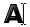) in the toolbox. The Select tool cursor changes to the
Text tool cursor (). Position the Text tool cursor so that the center
of the cross hair is in the top left corner of the artwork.
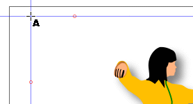
Text tool cursor positioned at intersection of guide
lines.
Create a text box by clicking and dragging down and to the right
using the guides that already exist in the document, then release.
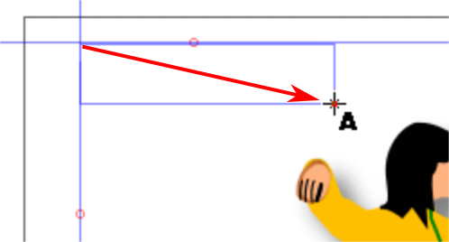
Creating a text box.
The center of the Text tool cursor cross line marks the drawing center
of the tool.
Click to set the type baseline and type T’ai Chi. Note
that a small guide square appears at the bottom left of the T,
marking the start of the baseline of the text.
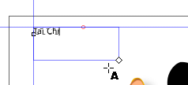
Typing in the poster title text.
By default, the type you create is 12-point sans-serif, filled with
black, and stroked with None. The Fill and Stroke boxes in the toolbox
(in the lower left corner of the working window) display the type’s
current paint attributes.
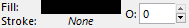
Fill and Stroke attributes of the poster title
text.
Applying Attributes of One Body of Text to Another
Now, you’ll apply attributes of other text in the poster to
the title text.
With the Text tool active, click on the line “Lecture Series
300”. Note that the text font is 18 point Chaparral Pro bold
italic.
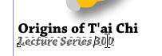
Clicking on the Lecture Series 600 text with the
Text tool.Text attributes of the class subheader.
With the text still selected, click on the Fill and Stroke icon in
the Commands Bar (). Click on the Fill tab if it is not
highlighted. Note that the text fill is 60% gray (K for black
is 60 on the K color bar.).
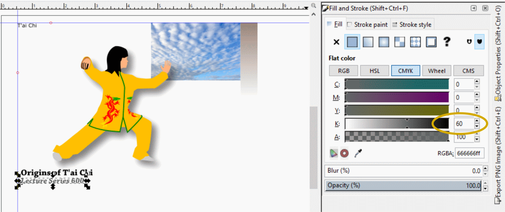
Color and Stroke attributes of the class
subheader.
With the Fill and Stroke palette still active (bring it back up if
it isn’), double-click on the RGBA hexadecimal code to
highlight it, and press <Ctrl>-C to copy the code to the
Clipboard.
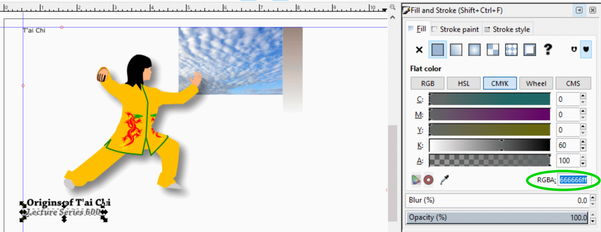
Double-click on the hexadecimal color code to highlight it,
and <Ctrl>-C to copy it to the Clipboard.
Note the 666666ff code. This code represents 60% gray.
80% gray is 888888. The two ffs represent 100% opacity.
Now click on the title text T’ai Chi to select it,
double-click on the hexadecimal color code to highlight it, press
<Ctrl>-V to paste the new color code in from the Clipboard, and
press <Enter> to set the value. The title text has the same gray color
as the course subheader.
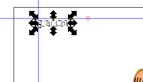
Gray color copied to title text.
Click on the Text and Font icon () in the Commands Bar. Locate
and choose the Chaparral Pro font in the Font family dropdown
listing, Bold Italic in the Style listing, and 18 in
the Font size dropdown listing.
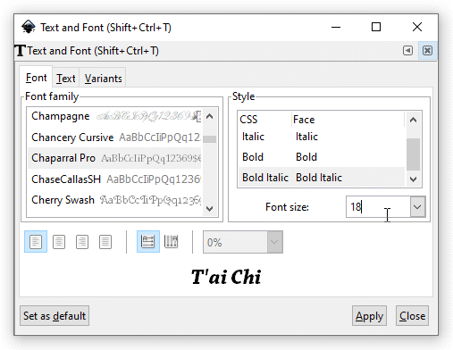
New text attributes chosen in the Text and Font palette.
Click on the Apply button. The poster title appearance now
reflects the new text attributes.
The Chaparral Pro, bold italic, 18 point font face is applied
to the poster title text.
Changing Character Size
Now you’ll use the Text and Font palette to make the title
text bigger.
Click on the Text Tool icon () in the
toolbox. The Text and Font Command Bar appears above the work window.
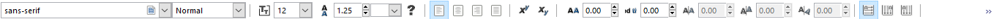
Text and Font Command Bar.
Left Half of the Text and Font Command Bar
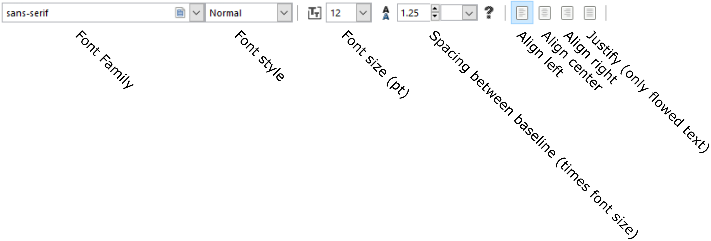
Right Half of the Text and Font Command Bar
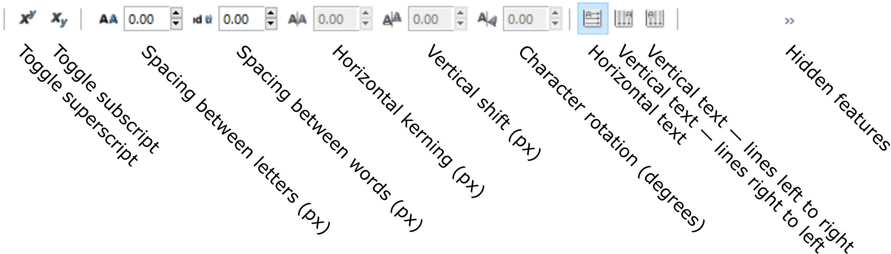
Hidden Features
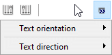
Two hidden features.
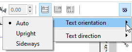
Text orientation submenu.
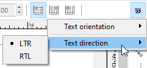
Text direction submenu.
By default, the Text and Font Command Bar displays the selected
font and its style, size, kerning, leading, and tracking values. If the
type selection contains two or more attributes, the corresponding text
boxes are blank. (Leading is the amount of space between lines or
paragraphs. Kerning is the space between two characters.
Tracking is the spacing between a string of characters.)
Type 120 in the Font Size text box and press <Enter>
or <Return> to increase the font size to 120 points. The text box
you drew earlier appears and a blinking angled line segment also
appears.
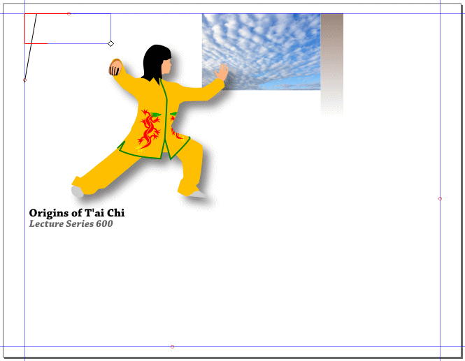
Title text now at 120 points but doesn’t fit into
the text box.
The title text has been magnified so much that it no longer fits
into the text box. To remedy this situation, click on the diamond on the
lower right corner of the text box and drag it down and to the right until
the title text appears in its entirety.
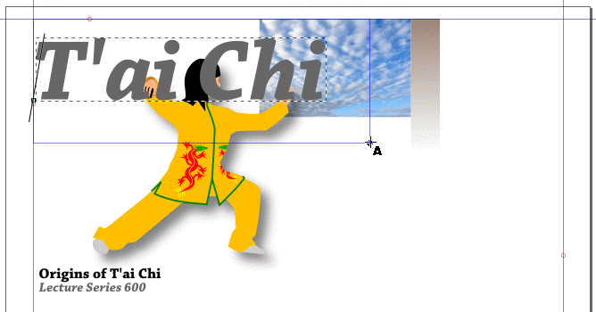
Expand the text box until the title text appears.
You can also select a font and font size using the Text and Font
palette dropdown listings.
Reshaping Text with a Deformation Lattice
A deformation lattice is just a grid that allows you to manipulate
a shape inside it. The grid you’ll be using has points where grid lines
intersect that you can move to reshape your object. You will distort the
text to make it follow the shape of the image of the person.
Select the title text and press <Ctrl>-D to make a copy of
it.
<Ctrl>-drag the copy of the text off to the side of the artboard
and leave the original text in place. The copy of the text object serves as
a backup copy.
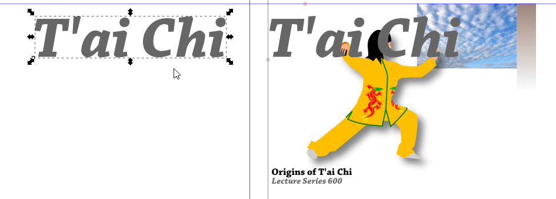
Make a copy of the title text.
Select the original title text with the Select tool ().
Choose Path > Object to path to convert the original
title text from a text object to a grouped path.
Choose Path > Path Effects…
The Path Effects dialog box appears.
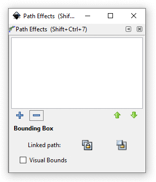
Path Effects dialog box.
Click on the Plus Sign icon () to add a path effect to the Effect
list window.
The Add Path Effect listing appears. Select Bend.
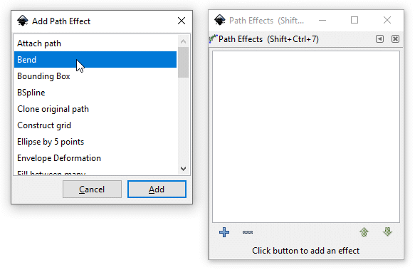
Select Bend.
Click on the Add button. The Bend
effect is added to the effects window.
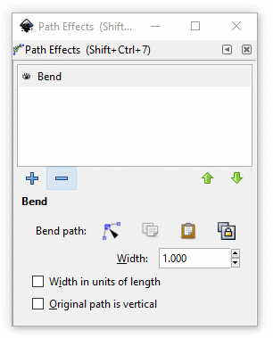
Bend added to the Path Effects window.
You can add more than one path effect to your shape object. When you
want to use one particular effect, click on it to select it, it will
highlight to show you that it is the currently active effect and immediately
available for use.
Click on the Bend path node tool option. The title text is
immediately surrounded by a deformation bounding box with a bend tool line
running through its length.
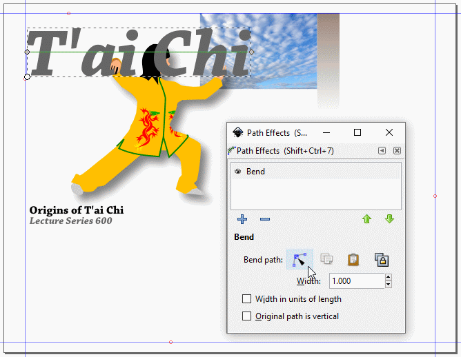
Node Tool is selected and deformation bounding box
appears.
With the Node Tool cursor, click on the Bend tool line and drag it
down to create a curve in the title text that mimics the curvature of the
person’s upper body (the result does not have to be exact).
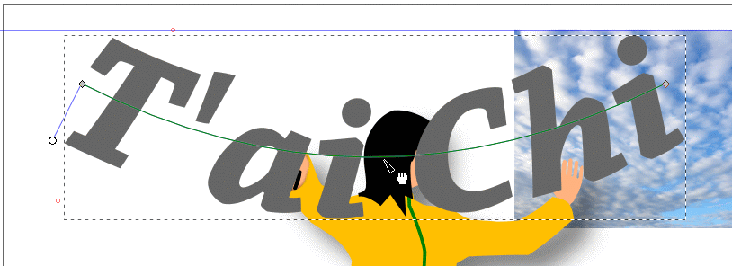
Pull down on the Bend Tool line with the Node
tool cursor to curve it.
You will now fine tune the placement and curvature of the poster
title text.
Alternate between using the Select tool () to move,
rotate, and resize the entire text object and using the Edit On-canvas tool
() to fine-adjust the downward bend in the curvature. When the Select
tool () is active and you need to use the Bend tool, click on the Edit
On-canvas tool () in the Path Effects palette so the
Bend Tool line will reappear as the active tool.
If the Bend tool disappears for no reason, just click on the Edit
On-canvas tool () to reactivate it.
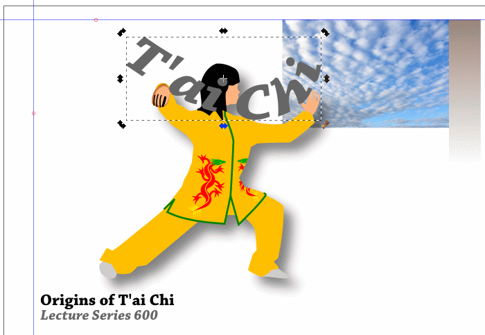
Select Tool and Bend Tool used to fine-adjust the poster
title text. The text was just rotated – note the rotation
handle in the lower right corner of the text’s
bounding box.
With the title text still selected, place it below the person by
clicking on the Lower selection one step icon () in
the Tool Control Bar.
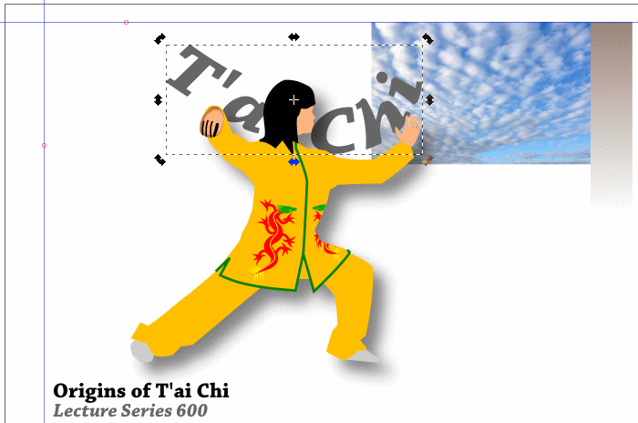
Figure placed behind poster title text.
The person’s face hides the i in the word
T’ai. Adjust the size and placement of both title text and
figure so that all the text is visible. Place the text so that the T
at the beginning of the text touches against the two guide lines in the upper
left corner of the artboard. You might also need to move the course
heading and subheading that are near the person’s back foot.
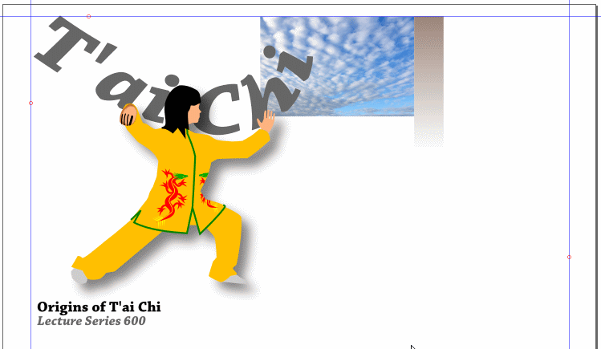
Poster title text and figure fine-adjusted for better visual
composition.
Creating Type Paths
You can modify the shapes of individual letters in a block of type by
converting the block to type paths or letterforms. When you create type paths,
each character becomes a separate object with compound paths outlining the
character. This is helpful when creating logos or other artwork that is
distributed to many people and might not have the same fonts that you
used.
Now you will create the number 300 and convert it into paths.
Click on the Text tool () in the toolbox. Position the cursor and click on a
spot to the right of the filled rectangle in the upper right section of the
page. You will start typing here.
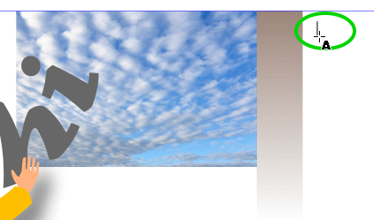
Start typing here.
Type 6 <Enter> 0 <Enter>0
<Enter>. The text looks like it flows down from the top. We used
Chaparral Pro, bold, 45 points for the font. We also changed the Spacing
between baselines () from 1.25 % to
0.90 %. Note the baseline marker square at the lower left of the
number 6.
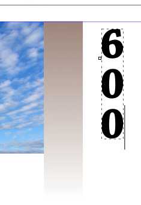
Typing in the number text object.
Group select the three numbers (click on one number or marquee
select). The three numbers are currently one group of text, so clicking on
one number selects the entire group.
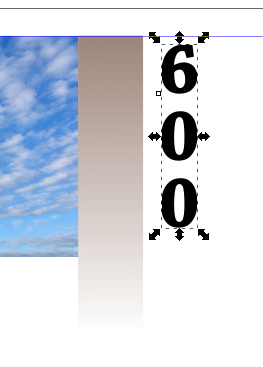
Select the number text object.
Choose Path > Object to path. Inkscape now no longer
considers these numbers as a single text object but as a group of individual
paths whose shapes can be modified in many different ways. Note that
baseline marker square at the bottom left of the character 6 has
disappeared. We will create our own custom stylization.
Deselect the character 6.
Choose the Node tool () and click on the character 6. Nodes appear on
the inner and outer curved paths that make up the shape of the character
6.
The character 6 as a path.
Magnify the 6. With the Node tool () still selected,
marquee select the inner path. If you accidentally include a node from the
outer path, click off the object to deselect and start again.
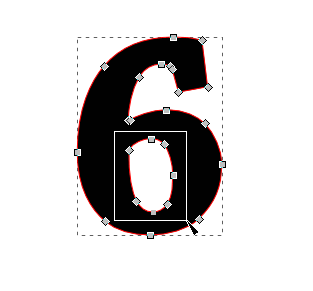
Select the inner path of the character 6.
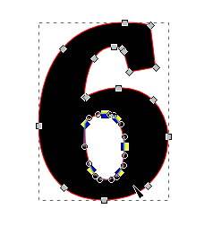
Inner path of the character 6 is selected.
With the inner path of the 6 still selected, press the Down
Arrow key a couple of times to move the inner path downward.
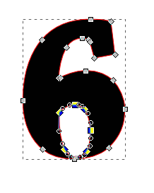
Inner path of the character 6 is moved down.
Choose Edit > Deselect twice — first time to
deselect the nodes on the inner path, and the second time to deselect the
entire character 6.
Stylized character 6.
Repeat Steps 6 through 9 for the two zeroes. You should see a stylized
string of numbers like the one below.
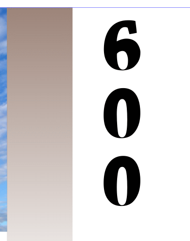
Stylized character string 600.
Move the 600 so it is inside the gray rectangle on the
right.
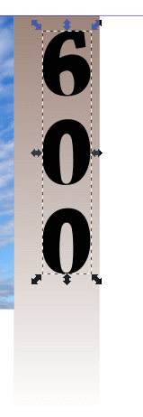
600 moved to inside the gray rectangle.
The 600 needs to be properly positioned in the rectangle. With
the character string still selected, <Shift>-click on the gray
rectangle to select it, also.
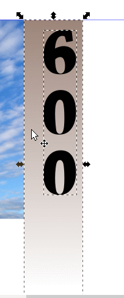
Group select the 600 and the background gray
rectangle.
Click on the Align and distribute objects… icon () in the Tool Controls Bar. The Align and Distribute
panel appears.
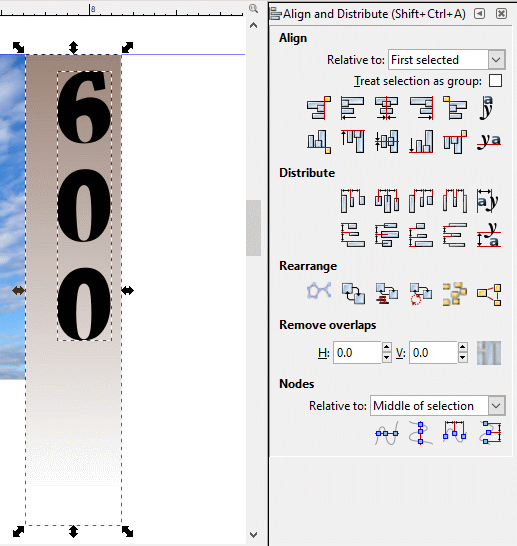
Align and Distribute panel.
Click on the down-arrow at the right of the Relative to: text
field box in the Align section and choose Last selected —
the gray background rectangle is the last item we selected and we will center
the 600 character object on the rectangle’s center line.
The 600 automatically moves to center line.
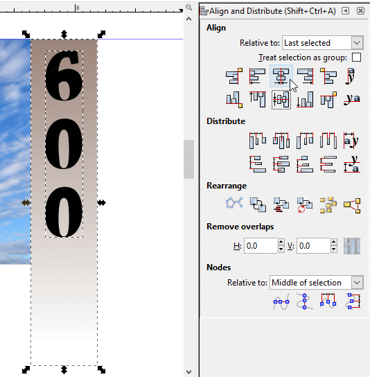
Centering the 600 character string.
With the 600 still selected, press the Up Arrow key until the
top of the 6 hits the blue guide line. Now, <Ctrl>-drag the
bottom center handle arrow up until the character string is about ⅔
the height of the clouds image.
Moving the 600 character string up and then
resizing it to ⅔ the height of the cloud picture.
We just did a “quick ’n dirty” size adjustment of the
600 character string so it is not out of balance with the whole
clouds and rectangle composition.
Now, with the character string still selected, press the Down Arrow key
until the top of the 6 is about half a character height down from the
top of the rectangle.
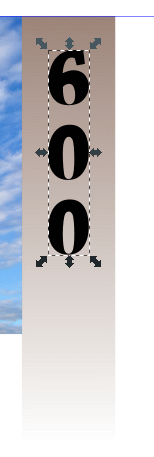
600 moved down half a character from the top of the
background rectangle.
With the 600 still selected, click on the White square in the
color palette. The lettering is now white.
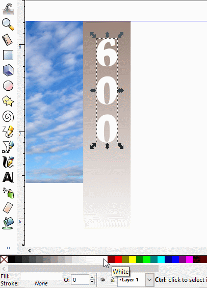
The 600 now has a white fill.
Click away from the artwork to deselect it.
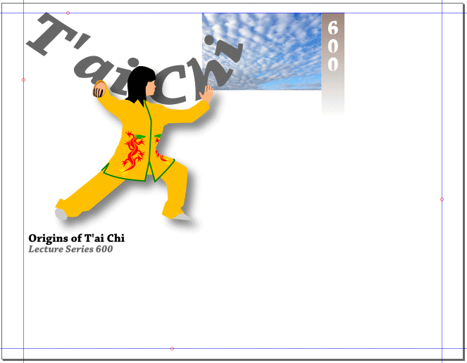
Result.
File > Save.
Creating Type Masks
Masks crop part of an image so that only a portion of it is revealed
through the shape or shapes that you create. You can use type as a mask
without having to convert the type to outlines first.
In this tutorial, you’ll create a mask using type and an embedded
bitmap image. An image of a cloudy sky was pasted into the document to use as
the background of the mask.
You will add the heading "ASIAN STUDIES PROGRAM" in the top right corner
of the poster and convert it to a type mask over the cloudy sky image.
Click on the Text tool () in the toolbox, and then click in a clear area
underneath the sky image where you will type the course title. Type, in
capital letters, ASIAN STUDIES PROGRAM. Use Chaparral Pro, bold, 28 pt.
Press <Enter> or <Return> after each word to left
justify-them.
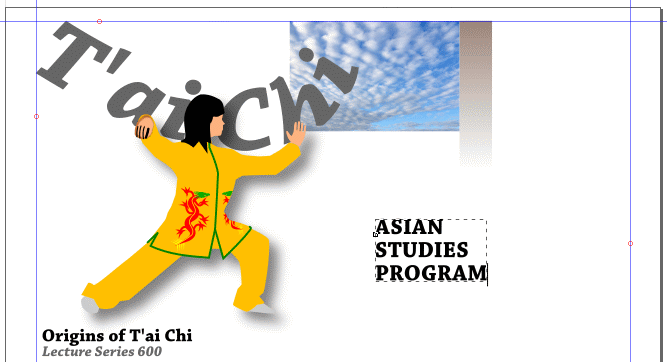
Type ASIAN STUDIES PROGRAM in capitals.
With the text still selected, click on the Align right icon ()
in the Tool Controls Bar. The text immediately justifies right.
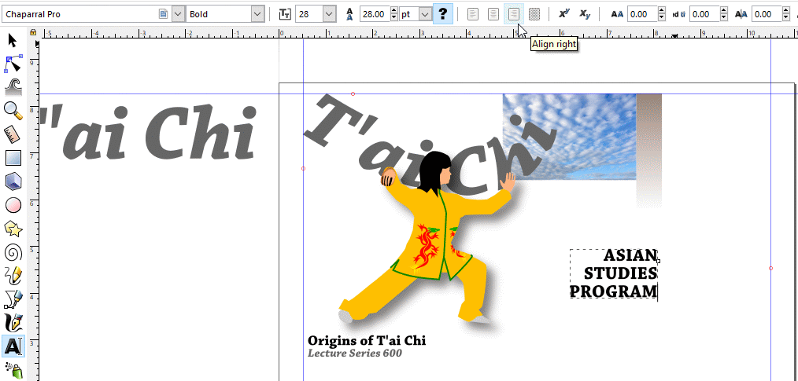
Text right-justified.
With the Select tool (), click-drag the image of the cloudy
sky down so that it lies behind the course title text. If it covers the
text, then click on the Lower selection one step icon () in
the Tool Controls Bar to place the image behind the text. We placed the
image so the lettering is superimposed over the upper left corner where
there is relatively strong contrast in colors.
Note: the image that is to be used as a mask is like a cookie
cutter that cuts out the cookies from the image underneath. Always
put the masking image or text above the image that you want to have shaped
like your “cookie-cutter” image.
Sky image placed behind course title text.
Choose Object > Clip > Set to perform the
clipping action.
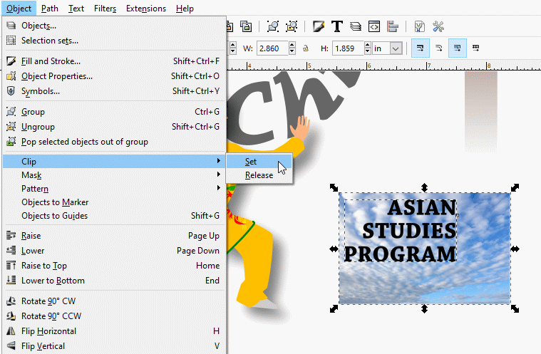
Choose Object > Clip > Set to clip the
underlying image.
Instead of a black fill, the text string now shows what lies behind
it. That rest of the sky image has been made transparent and so is not
visible. The result is a “cookie-cutter” effect that falls
pleasingly on the eye.
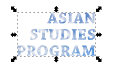
Clipping result.
We will now align the clip text and the 600 course number so
their top edges are aligned to improve visual composition.
Click on the 600 text in the adjacent gray rectangle and
then <Shift>-click on the clip text.
Choose Object > Align and Distribute…, choose
First selected in the Align section, and finally select the
Align top edges icon in the option listing.
The two items automatically line up along their tops.
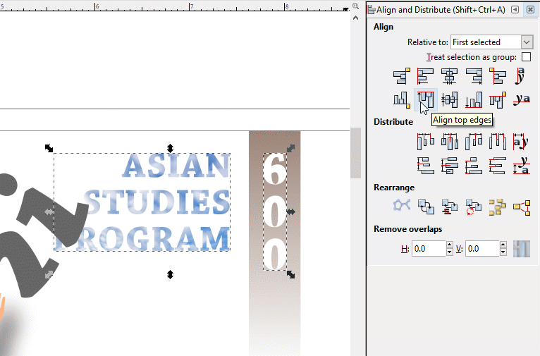
Top-aligning the two text objects.
The ASIAN STUDIES PROGRAM text is partially behind the
i in the T’ai Chi title text. We need to bring it
forward.
With the Select tool () active, select the clip text and then
click on the Raise selection one step icon () to
bring the text up one level. If the 600 text is still selected, no
change will happen with it — the characters are already so
“up” as they will go.
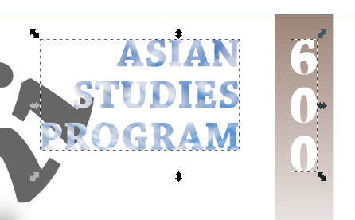
Raising the clip text one level.
Below is the poster-in-progress.
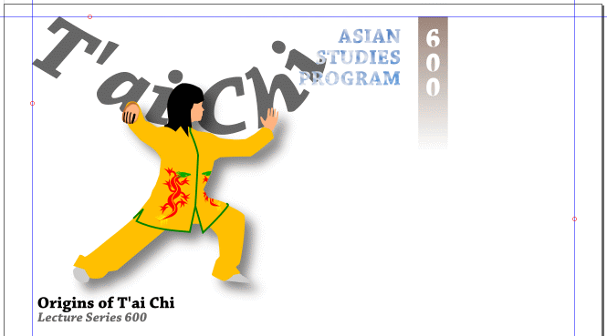
Result.
Typing Along a Path
You can enter type along a path in Inkscape. In this exercise, you’ll
add a freeform line of text to the poster. We will use the Adobe Garamond Pro
Regular font in this section. If this font is not on your computer, you can
download it from here, Adobe
Garamond Pro Regular, or from the Internet at Fonts
geek or Cufon
Fonts. Unzip the files and install them. If Inkscape is currently running,
exit and restart it so it will “see” the newly installed
font(s).
Select the Pen tool ().
Magnify the left arm of the figure so it’ll be easier to draw
the type path underneath it.
Start the type path by clicking with the Pen tool () under the
drop shadow where the arm joins the body. Click again underneath the elbow
and under the drop shadow. Click a third time at the sleeve of the tunic,
and then press <Enter> or <Return> to terminate the line
segment.
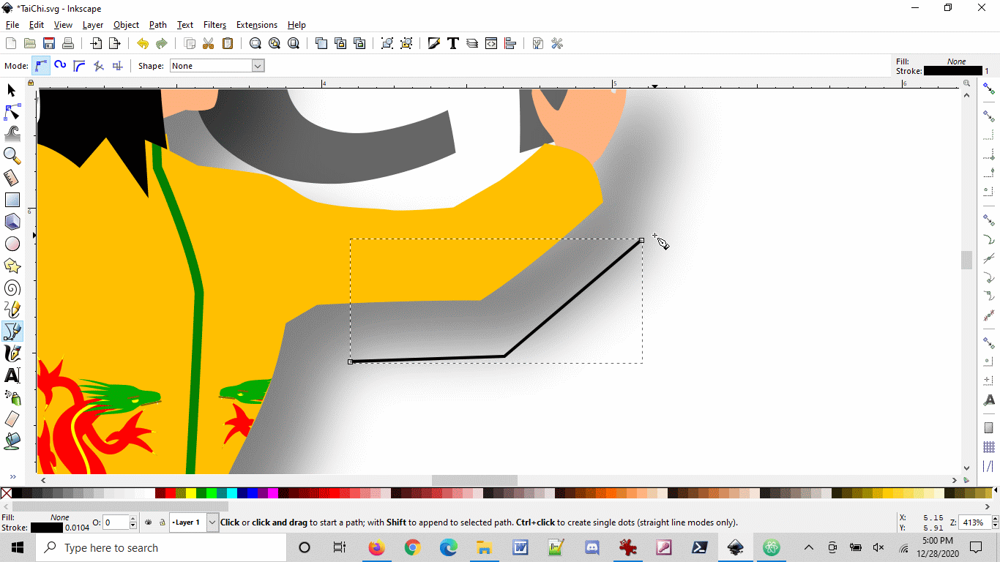
Drawing the type path.
Select the Node tool () and click on the line node that appears under the elbow
to make that node active. The node turns red when the Node tool cursor
hovers over it to indicate that it is active.
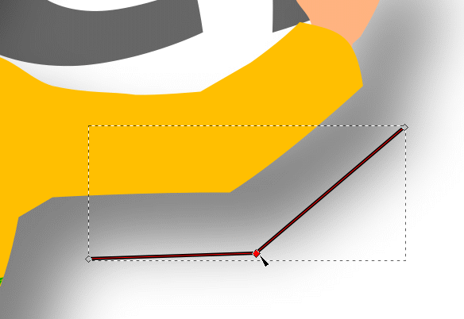
Selecting the elbow node.
With the Node tool () still active, select the Make selected nodes
smooth icon () in the Tool Controls Bar. The selected node
becomes a smooth curve.
Angular bend made smooth.
Select the Text tool () in the toolbox,
select the Adobe Garamond Pro Regular font, 6 points, and type underneath the
curve Combine mind intent and inner body skill.
Text to be set to the above-lying path.
Deselect the text by choosing Edit > Deselect. Then,
with the Select tool (), group-select the text and curve by
<Shift>-clicking the two objects (order is not important). Choose
Text > Put on Path to combine them.
Placing the text on the curve.
Note that the words body skill are cut off. The hidden parts
still exist. To retrieve them, click on the Node tool icon () and click-drag the
right end node that appears to the right to lengthen the curve until the
remainder of the text appears.
Lengthening the curve to make the remaining text
visible.
Press <Esc> twice to deselect the text and curve.
We will now eliminate the curve. Actually, we will render it
transparent.
With the Select tool (), select the curve. You might need to magnify
where you want to click to separate the curve from the text.
Tip:You can click on one or the other end of the curve with the
Node tool ()
and elongate the curve for greater separation from the text.
Choose Object > Fill and Stroke > Stroke paint tab >
No paint icon ().
The curve disappears. Only the text remains with its curvature intact.
The curve is rendered transparent and disappears.
File > Save.
Result.
Having Text Flow into an Arbitrary Shape
With Inkscape, you can fit text into a shape envelope you create. You can
edit the text as you would regular text: changing font family, font size,
color, and more. In this exercise, you will create a custom text box that will
contain type that conforms to the envelope’s shape.
Marquee-select all the contents of the artboard and <Ctrl>-drag
the lower right corner sizing handle until it meets the right-hand
guideline. The width of the poster image should now fill all the width
between the left-hand and right-hand guidelines.
Expand the full poster image.
Choose View > Page Grid to bring up the background
grid. We’ll use it to create a text containment box. Then, if the
Snap Controls Bar isn’t active, choose View >
Show/Hide > Snap Controls Bar to bring it up. Click on the
Enable Snapping (%) icon (), the Snap Bounding Boxes icon
(), Snap node, paths, and handles icon (), Snap cusp nodes, incl. rectangle corners icon
(),
and finally, the Snap to grids icon ().
With the Pen tool (), draw a containment box that follows the
person’s shape on the right, preferably avoiding the drop shadow,
goes straight to the right from the figure to the right guideline, then
going straight down to the bottom guideline, over to the left on the bottom
guide line, and then up, avoiding the drop shadow and reconnecting with the
starting point. Use the figure below as a template.
Note: You can draw the containment box any way you wish. The
direction in this exercise is completely arbitrary. The Snap to grids
function is meant to help you draw straight horizontal and vertical lines
with minimal fuss.
Draw the text containment box.
Open the Text.rtf file and copy the text to the Clipboard.
Return to the TaiChi.svg file, and paste the text (<Ctrl>-V)
onto the artboard.
Copy and paste the text from an outside file.
You will now flow the text into the containment box.
<Shift>-click on the containment box and the text to group-select
them (order doesn’t matter).
Group-select the text and the containment
envelope.
Choose Text > Flow into Frame. The text is
automatically placed inside the containment box so that it wordwraps around
to the next line down when it reaches the right side of the box.
Flow the imported text into the envelope frame.
With the Text tool () active, insert hard
returns (press <Enter> or <Return>) in appropriate places to
put a space between paragraphs.
Separating the paragraphs.
With the Text tool (), select the
first two lines of the text. Choose the Chaparral Pro font, italic font
style.
The first two lines are selected and Chapparal Pro italic
font used.
Now select the first sentence “The master of one
move…” and increase its font size to 22 points and its leading
to 150 % (33 points).
Chapparal Pro italic 22 points with 33 point leading
(note the 150 % in the Tool Controls Bar).
Select the attribution line with the Text tool () and increase its font size to 14 points.
Note: Inkscape occasionally doesn’t give you the exact
number of points, but gives you a closest approximation, as you can
see in the figure below, of 13.99 pt, instead of 14 pt. Don’t be
concerned about it — it’s a mathematical artifact of the
resizing process inside Inkscape’s program machinery.
The attribution line is set to 14 points.
Click on the Align right icon () in
the Tool Controls Bar to right-justify the attribution line.
Right-justify the attribution line.
With the Text tool (), select the
remaining paragraphs and change their font to Chapparal Pro, 13 points. The
text fills the remaining space in the containment box.
With the Select tool (), click on the containment box border,
choose Object > Fill and Stroke, Stroke paint tab, and
click on the No paint icon (). The containment box disappears
(actually, it is still there, just transparent).
The result is a finished poster.
Finished poster.
Saving Your File for Electronic Distribution
Now you’ll save a copy of the poster in Portable Document Format
(PDF) so you can distribute it electronically, or link it to your Web site.
When you save your artwork in PDF format, Inkscape creates an exact snapshot
of the page that lets you view it online without the fonts or software used
to create it.
Choose File > Save As… In the Select file
to save to dialog box that appears, click on the down arrow at the
right end of the Save as type: text bar to bring up the file format
dropdown listing. Choose Portable Document Format (*.pdf).
Choose the Portable Document Format option.
A PDF copy of the Inkscape artwork file is created with the
.pdf filename extension automatically appended, ready to be saved in
a convenient storage location.
PDF file is ready to be saved in a storage
location.
Use the Save in: navigation bar to go to the storage location.
Click on the Save button. A Portable Document Format appears so
you can fine-tune the portable document format parameters. In the Text
output options: section, choose Convert text to paths to make
the file font-independent, and adjust the Resolution for rasterization
(dpi): to 192 to reduce graininess of the imagery. Click on the
OK button.
Adjusting parameters for the PDF file.
Note: Inkscape’s default value for Text output is
Embed fonts. This value means that any PDF viewer will have to
have all the fonts that the artwork uses available to view the file
correctly. If the fonts do not exist for that viewer, they will appear as
a default font that might not reflect the artwork accurately. It is wise
to choose the Convert text to paths options so the text is
font-independent and will render correctly every time.
Computers and Web browser technology has advanced over the years to
where high resolution imagery is the standard. Inkscape’s default
raster resolution is 96 dots per inch. Doubling that value significantly
reduces the graininess seen in low-resolution images and improves their
appearance. High-quality printing might require even higher values,
depending upon the technology used. You have the option of increasing
resolution to any custom value just by changing the value of the raster
resolution. The value is automatically saved in the file.
Below is the final artwork as a Portable Document Format image,
viewed through Adobe Acrobat Reader®.
The final artwork, saved as a PDF file and viewed through
Adobe Acrobat Reader.
You have now finished this tutorial on typography. We have only touched
the surface of what you can do with text in graphic design — it is
such a broad topic. Explore whatever ideas arise, and play with the features
Inkscape offers you in putting those ideas on-screen. Explore the World-Wide
Web as a vast showcase of artwork that you can learn from, mimic, expand upon,
and redo with your own touch, to expand your own capabilities, skills, and
imagination.
Review Questions
Describe three ways to enter text into the artwork.
Describe two ways to change the font and size of type.
How do you create type that follows the shape of a path or an
object?
What is a reason for converting type to paths?
How do you create a type mask?
How do you create a PDF version of an Inkscape document?
Review Answers
To enter text in the artwork, do any of the following:
Select the Type tool () and start typing.
Copy text from an external file to the Clipboard, and then
paste into the artwork using Edit > Paste or
<Ctrl>-V (hot key combination for pasting).
Click inside a shape that has text already placed inside through
the text flow feature with the Type tool () and start
typing.
To change the font and size of type, you can use the controls in
the Text and Font palette, or choose commands from the Font and Size
submenus in the Type Tool Commands Bar.
Convert type to paths when you want to transform (scale, reshape,
and so on) letters individually in the word or block of type. Paths are
also useful for filling type with a gradient fill. Paths also eliminate the
need to send the font along with the file when sharing with others.
Create the path you want the text to follow using a shape, or by
using the Pencil tool () or Pen tool (). Have the text available (already
typed or pasted in). Select both the text and the path, and choose
Text > Put on Path.
One way to create a type mask is to select the type that you want to
be the mask, and select the object, bitmap image, or type that you want to
show through the mask. (The masking type must be in front of any other
objects.) Then choose Object > Clip > Set to create the
type mask.
To create a PDF version of an Inkscape file, you choose File
> Save As…; then for type, you select Portable Document
Format.


{kind=link}

 ) in the
toolbox. The Text and Font Command Bar appears above the work window.
) in the
toolbox. The Text and Font Command Bar appears above the work window. ).
). ) and click on the character 6. Nodes appear on
the inner and outer curved paths that make up the shape of the character
6.
) and click on the character 6. Nodes appear on
the inner and outer curved paths that make up the shape of the character
6.


 ) to
bring the text up one level. If the 600 text is still selected, no
change will happen with it — the characters are already so
“up” as they will go.
) to
bring the text up one level. If the 600 text is still selected, no
change will happen with it — the characters are already so
“up” as they will go. ).
). ), Snap node, paths, and handles icon (
), Snap node, paths, and handles icon ( ), Snap cusp nodes, incl. rectangle corners icon
(),
and finally, the Snap to grids icon (
), Snap cusp nodes, incl. rectangle corners icon
(),
and finally, the Snap to grids icon ( ).
).